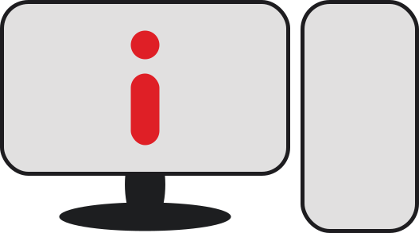
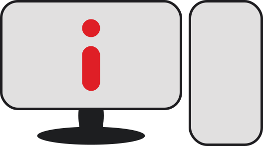

I will show my researching after
Education process
I am in process of creating new methods


Done
Think
Do
You may open fullscreen by "F11"
I will show my researching after
Education process
I am in process of creating new methods
I want to make something new in education vision.
It is hard at the moment but we need to make all of our power to study, because now we have great possibilities to study enough. I want to make it simple for everyone and make it equal for everyone. Equal is not the same study process, equal is value to get study.
In my dreams, I want to make study free, where everyone can do it without your spendings. I want to make programs that do not teach you or learn. They give you possibilities to do it.
There are a lot of ideas that I want to make in real and this is good start-up because I want to be part of it and want to get human great in all-around. My task is make power of real and digital together. When people may study in which time they prefer at home and after study they may come to their teammates in their interest and discipline in real. Make programs that may understand where live another teammate from your class and you may contact with him in GPS if he agree with it.
I want to make study in VR and on practice every time.
When human end this study he have the certificate that show something about this discipline.
There are QR code that show all of you and your knowledge and etc. more
Of course, on start of project we may create only few types of disciplines. I am really wonder and looking forward to future, where all people may play games and study. Have fun in process, communicate with others and make it simpler when in life.
Of course, some kind of this process must not to have borders and censors. However, we need to control it. All good and bad sides will be in statistic. If someone want to use curse words, it is ok. If someone make fun in it, it is ok. After all, it will be in statistic of your certificate that show to his chief. Make sure that it is really qualify worker, understand his good and bad sides. Psychology, attestation, grade, some of levels of communication, perseverance, speed, etc.
There are many good possibilities to make it stronger.
I have a great marketing plan, production, patterns and of course idea way to this conceptual project. I want to make this bigger and smarter to everyone, study process need enormous changes that we cannot imagine, but not me. I do not study in school from 12 years at least and after I comes to external study process. I know how to study without school and do it very good. I know how to build statistics and make it greater to others.
I want to make it and I need the team that change this world with me. Of course, I need investments, but I want to make it in real.
This is real study in digital reality. No one university cannot give practice every time. Of course big problem may be in theory, but its computer and I have some UI design for combination of theory that in the moment can be in digital real. A lot of different ways to compare theory and practice time by time. Many different times that we need to spend to 1 study and all of it I researched in me. I know how process of study need to compare.
Idea that I show for you strange and may be scared for everyone who be in study like work. Its future and I think that combining all base of researches, videos, photos and other science works, that will be in one place may be great for everyone. If we know how to study and do it in alternative reality, everyone may be better anyway. Because now is big problems that show internet and this the biggest problem that we will see is glut of information. I think it cannot be bad like it be. It is good but humans cannot stop and see bad sites that show advertising and something additional. All needs simplicity that cannot give you glut. I think that we need to have knowledge how to have glut or find useful. Of course, everyone may be interested in something useless, but no one cannot do it the best way. We need to make attention to the future to live and colonize other planets.
I need to make prediction for this project and how much does it cost. I make calculations prefer a lot of time and now I do it again. I think that something of this may cost around 30 000 to make first prototype, it is only because a lot of part of work I did before. Of course this cost without human bads and if I find workers distantly. However, for this kind of project it needs to be more than distantly we need do it together in teamhouse or teamflat.
There are around 80 000 – 100 000 more to live for first 12 weeks of prototyping. After all, it needs to have marketing and I have many free marketing plans that cost by time.
My idea to make it for first half of year and do it bigger and smarter by complaining to different countries. After 3 months and first prototype, we need to have more people because it will be different to realization. It will be strange but I want to make more countries on alpha version and only after it make it to beta and delta. I will have 24 versions and all of it – Greek symbols. I cannot understand from what discipline I want to start but I think that it will come to me during I write my site. Moreover, here we are.
So value for first 3 months 100 000 – 140 000, I think. After it, I will do it constantly faster. Next 3 months 200 000 – 380 000. During this time, we need to complain a lot of different countries and prototypes by disciplines. 6-9 month will be like adaptation to reality and make prediction to it I cannot for this moment, but I must do it. It will be various from 190 – 600 because I think we may create an pause and stabilize demand from interest, everyone needs an time out and 3rd decade will be great for it, we may reduce costs and make another plan. After it in 9-12 week will be great and here I may predict 300 000 – 600 000 money to realization, I cannot said that it could be, but I think in process of being in all stages I make millions ideas.
I make sure that it could be different from reality and I try to make some chance for my calculations.
First 3 months 141 000 – 219 800. Second quarter by chance 56 000 – 501 600. Chance said me, that 6-9 months will be more than I think and it is from 840 000 to 1 050 000. Last 3 months 1 605 000 - 6 500 000$
There are main difference in type of Education process. Cause of it – we may see smart Education process or simple mechanism. Also I need to make it eco-product of course.
There are few description of idea